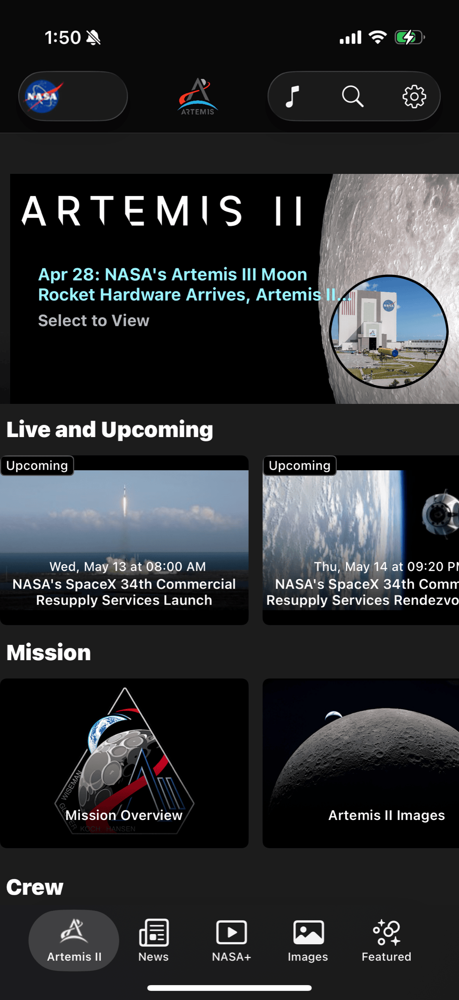
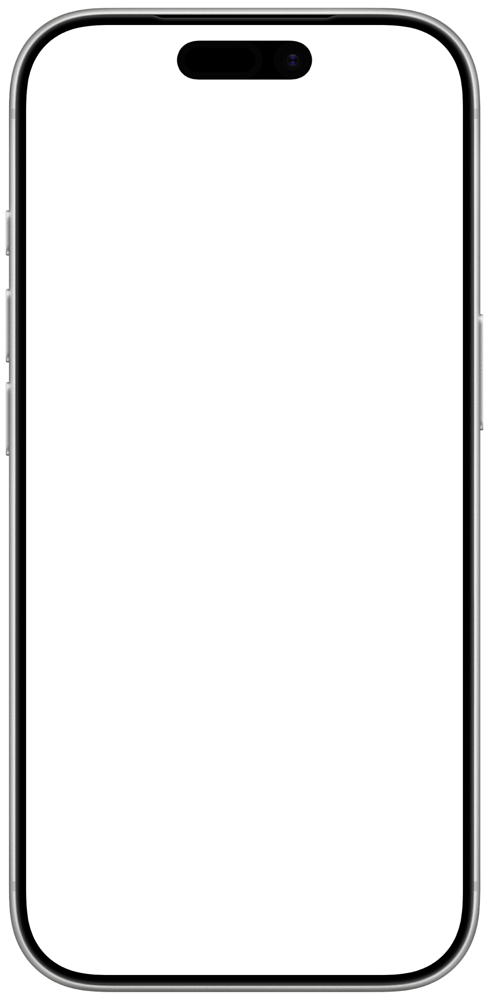

포털 같은 카테고리 그리드
앱 진입 즉시 우주가 펼쳐져야 할 자리에 6개의 카테고리 선택 화면이 사용자를 맞이합니다. 압도가 아니라 결정이 먼저입니다. 우주 콘텐츠 앱이 정부 포털과 동일한 첫인상을 만듭니다.
SEVERITY
9 / 10
UX IMPACT
95%
USER TOUCH
EVERY SESSION
→FIX PATH · MODULE 04 · OBJECTIVE · TODAY · Hero APOD 카드 + 오늘 일정 + Sky Tonight + NEO